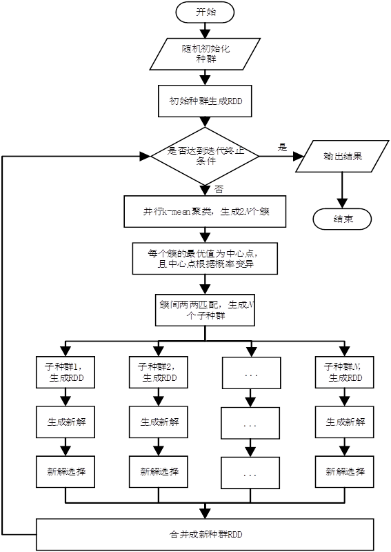
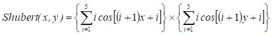
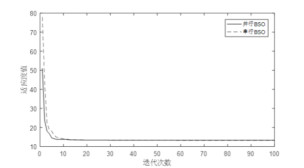

单目标BSO算法并行化设计与实现
张涛
多种群体智能算法都适合并行化。目前已有多种算法实现了并行化，如遗传算法，粒子群算法等。本文实现了一种基于Spark的BSO并行化方法，通过将聚类和产生新解的过程并行化，望能在实际应用中提高优化速度。并行算法流程图如图1所示。

图1 并行BSO算法流程图
用scala语言基于spark框架进行RDD编程，使图1的流程图能跑在集群上。接下来进行了实验测试，目标函数采用Shubert函数，如公式（1）。
 (1)
首先比较了收敛速度。设置聚类数为8，与原BSO算法的比较结果如图2所示。由于划分了多个子种群，收敛速度有所提高。

图2 收敛速度
接着又对加速比进行了分析，主节点核数为2，从节点核数共为10。在多节点并行的时候，计算的速度有所提升。在聚类数设置为2时，加速比在1.5左右。当设置聚类数为24时，加速比提升到了2.2左右。如表1所示。
表1 加速比
|
聚类数 |
迭代次数 |
加速比 |
|
2 |
100 |
2.64 |
|
100 |
2.42 |
|
|
200 |
1.91 |
|
|
500 |
1.60 |
|
|
1000 |
1.67 |
|
|
24 |
50 |
3.59 |
|
100 |
2.84 |
|
|
200 |
2.12 |
|
|
500 |
2.21 |
|
|
1000 |
2.14 |
综合来讲，该并行BSO算法目前可利用Spark框架来解决大数据集优化问题，但笔者觉得该并行BSO算法在加速比上的表现还有待提高。如何在保证算法性能不降低的情况下，通过改进BSO算法使BSO算法的整个流程全部在集群从节点上运行，并尽量减少shuffle操作，是接下来需要研究的问题。